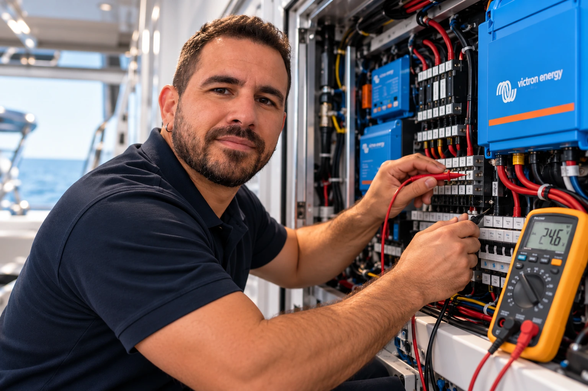
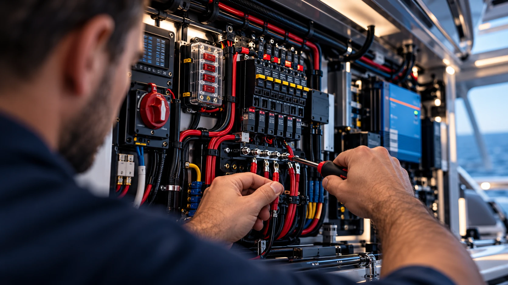
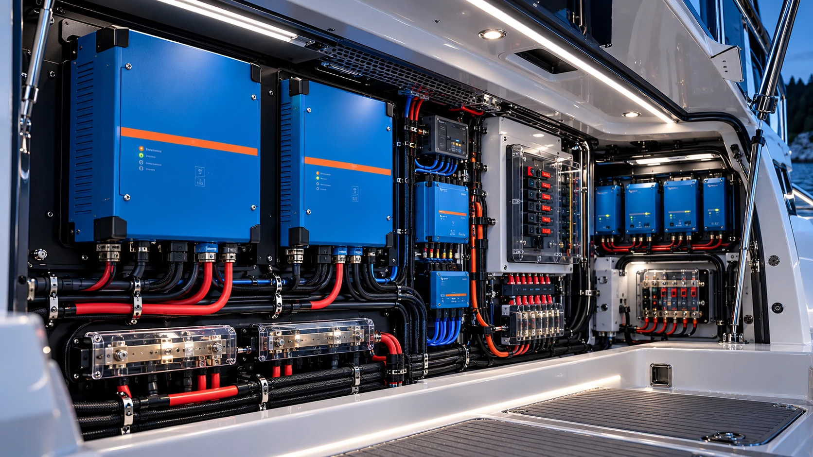
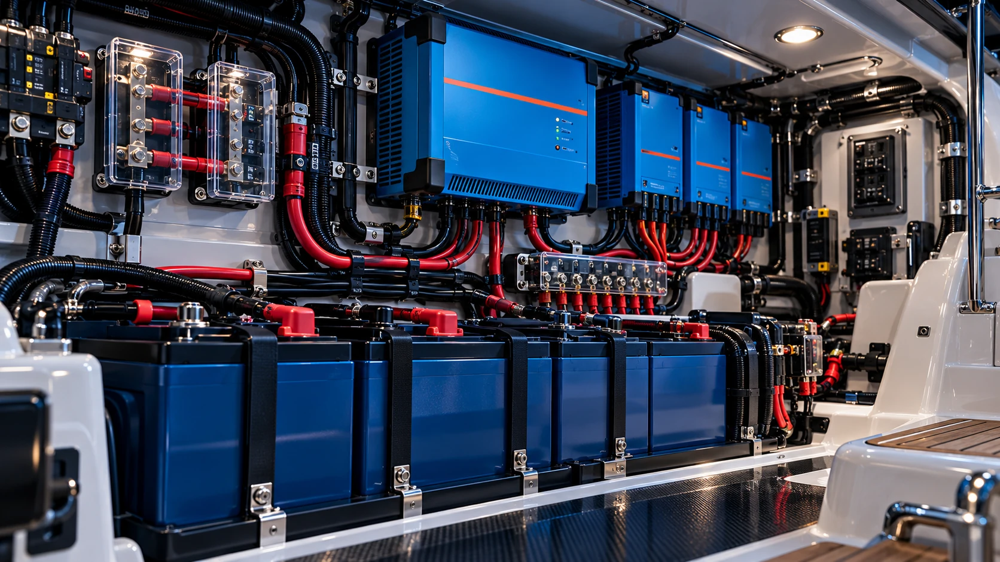
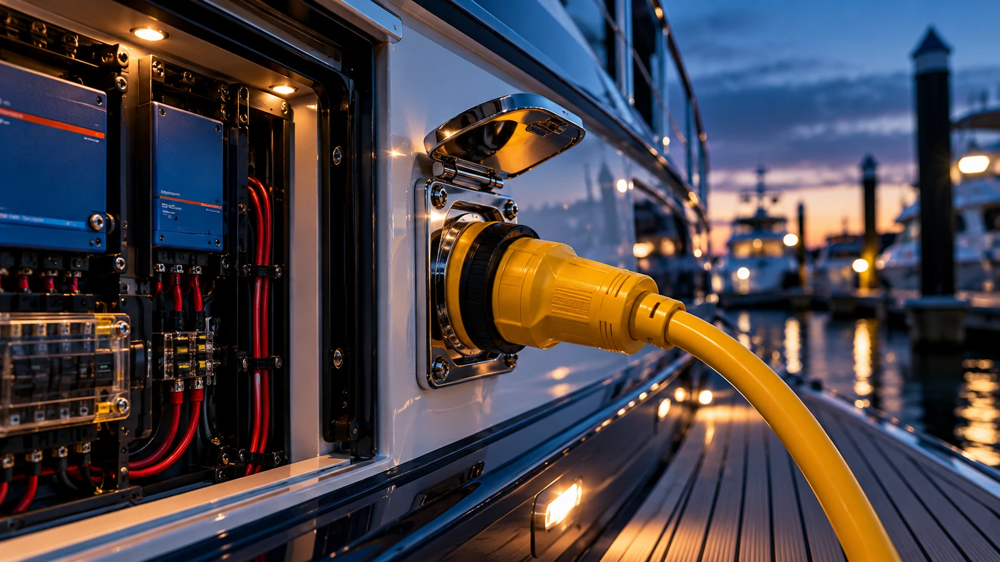
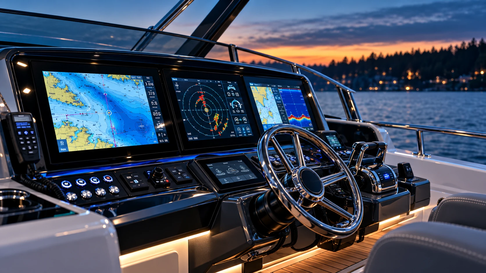
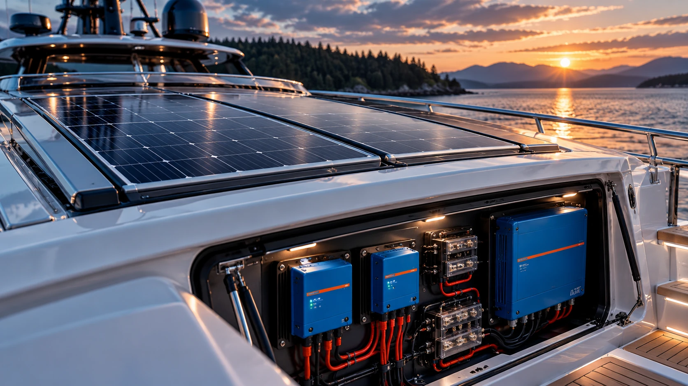

Power Conversion
Inverters, inverter/chargers, converters and onboard power architecture.
AVIATION-INSPIRED PRECISION
Advanced troubleshooting, electrical diagnostics, repairs and integrated onboard technologies for recreational vessels across Greater Puget Sound.

CORE SPECIALTY / TROUBLESHOOTING
Electrical faults can involve more than a single component. Our approach emphasizes observation, measurements, circuit tracing and system-level reasoning to locate a problem before recommending corrective work.
Specialized in troubleshooting complex electrical and electronic systems.
DISCOVER DIAGNOSTIC SERVICESReview symptoms, operating conditions and connections between components.
Trace circuits and test signals to narrow down potential causes.
Recommend appropriate repairs and evaluate the system after corrective work.
MARINE ELECTRICAL SERVICES
From challenging electrical faults to equipment upgrades, our services are tailored to the needs of recreational boats and yachts.

Fault isolation, circuit tracing and systematic analysis of difficult electrical issues.
LEARN MORE →
Careful repair and restoration of onboard electrical systems.
LEARN MORE →
Modernization and integration of AC/DC equipment and circuits.
LEARN MORE →
Battery banks, charging systems, inverter/chargers and monitoring.
LEARN MORE →
Onboard AC distribution, connections and shore power equipment.
LEARN MORE →
Electrical integration and support for onboard electronics.
LEARN MORE →
Solar charging and integration with onboard power systems.
LEARN MORE →Also available: marine lighting and complete rewiring.
VIEW ALL SERVICES →HIGH-TECHNOLOGY SYSTEMS
Independent diagnostics, configuration and integration across modern marine electrical and electronic technologies.
Inverters, inverter/chargers, converters and onboard power architecture.
Battery banks, charging management, solar controllers and monitoring.
Protection, distribution panels, connections and system coordination.
Energy monitoring, interfaces and connected equipment operation.
Navigation equipment, electronic modules and embedded-system interfaces.
Interconnections, configuration, fault tracing and functional verification.

EQUIPMENT EXAMPLES
Victron Energy and Mastervolt are examples of equipment found in marine power systems—not the limits of our technical scope.
Independent service provider. No manufacturer authorization or certification is implied. These equipment photographs are not presented as DAROCHA SYSTEMS client projects.
EXPLORE ADVANCED SYSTEMSTECHNICAL BACKGROUND
Nearly 25 years in aviation, alongside experience in electrical and electronic systems, industrial automation, production-line robotics, automated storage and embedded systems, inform our approach to marine troubleshooting and integration.
EXPLORE OUR BACKGROUND →EDUCATION & TECHNICAL TRAINING
Aviation discipline · electronics · automation · embedded systems
WHY DAROCHA SYSTEMS
Find the likely cause before deciding what needs to be repaired or replaced.
Consider how electrical, electronic and control components work together.
Focus on the vessel's requirements rather than a single equipment brand.
SERVICE AREA
Based in Edmonds, Washington. Mobile marine electrical service within approximately 60 miles in a straight line from Everett, subject to location and availability.
Contact us to confirm access to your marina or vessel location.
CHECK SERVICE AVAILABILITY →LET'S TALK ABOUT YOUR VESSEL
Tell us about your symptoms, system issue or planned upgrade. We'll discuss the next steps.